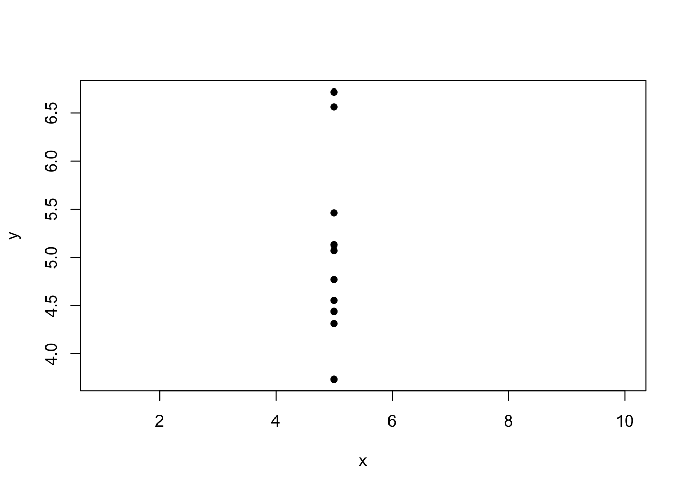

2 Parameter estimation for linear models
In this chapter, we will:
- obtain estimates of all the parameters in a linear model;
- discuss maximum likelihood and least squares estimation for linear models;
- derive properties of our parameter estimates, and use these to obtain confidence intervals;
- discuss the \(R^2\) goodness-of-fit measure for a linear model.
(Note that least squares is the primary method for estimating coefficients, and we only briefly consider maximum likelihood. If you want to revise likelihood and maximum likelihood notes are available here.)
2.1 Estimating the coefficients
Given a linear model as in \[ \boldsymbol{Y}=X\boldsymbol{\beta} +\boldsymbol{\varepsilon}, \] we will want to use our observed data \(\boldsymbol{y}\) to estimate the parameters \(\boldsymbol{\beta}\); for example in simple linear regression we are estimating an intercept \(\beta_0\) and gradient term \(\beta_1\).
Suppose we have estimates of the parameters \(\hat{\beta_0},\hat{\beta_1},\ldots,\hat{\beta}_{p-1}\), or in vector form \(\boldsymbol{\hat{\beta}}\). Then the fitted value \(\hat{y}_i\) for observation \(i\) is defined as \[\hat{y}_i:=\hat{\beta_0}+\hat{\beta_1}x_{i1}+\ldots+\hat{\beta}_{p-1}x_{i,p-1}=\boldsymbol{x}_i^T\boldsymbol{\hat{\beta}},\] where \(\boldsymbol{x}_i^T\) is the (row) vector consisting of row \(i\) of \(X\). The matrix product \(X\boldsymbol{\hat{\beta}}\) then gives the vector of fitted values for all observations.
The ‘hat’ notation
Note the difference between \(\boldsymbol{\beta}\) and \(\boldsymbol{\hat{\beta}}\): \(\boldsymbol{\beta}\) is the vector of true parameter values, \(\boldsymbol{\hat{\beta}}\) is the estimate of the vector of true parameter values.
For observation \(i\), the difference between the observed value \(y_i\) and the fitted value \(\hat{y}_i\) is called the residual for that observation, denoted by \(e_i\).
Errors and residuals
Note the difference between the error (\(\varepsilon_i\)) and the residual (\(e_i\)) for observation \(i\). The error is part of the statistical model that we fit to our data. The residual is the observed value of the difference between the response and the fitted value. As we will see later, the observed residuals, the \(e_i\), allow us to estimate the variance \(\sigma^2\) of the error terms, the \(\varepsilon_i\)
The vector of residuals will be \[ \boldsymbol{e}:=\left(\begin{array}{c} e_1\\ \vdots \\ e_n\end{array}\right)=\boldsymbol{y}-X\boldsymbol{\hat{\beta}}. \] Residuals play a key role in linear models. In later chapters we will see how they can be used to assess whether the statistical model we use to describe the relationship between our variables meets the assumptions underpinning linear model theory.
The sum of squares of the residuals, written as \(s_r\) or \(s(\boldsymbol{\hat{\beta}})\) is nicely expressed as \[\begin{equation} s_r=s(\boldsymbol{\hat{\beta}}):=\sum_{i=1}^ne_i^2=\boldsymbol{e}^T\boldsymbol{e}=(\boldsymbol{y}-X\boldsymbol{\hat{\beta}})^T(\boldsymbol{y}-X\boldsymbol{\hat{\beta}}). \end{equation}\] This sum is known as residual sum of squares and plays an important role in the the analysis of linear models. To see this, consider the likelihood of \(\boldsymbol{\beta}\) and \(\sigma\); this comes directly from the definition of the multivariate normal density: \[\begin{eqnarray*} L(\boldsymbol{\beta},\sigma^2;\boldsymbol{y}) &=& f(\boldsymbol{y}|\boldsymbol{\beta},\sigma^2) \\ &=& \frac{1}{(2\pi \sigma^2)^{n/2}} \exp\left(-\frac{1}{2\sigma^2}(\boldsymbol{y} -X\boldsymbol{\beta})^T (\boldsymbol{y} -X\boldsymbol{\beta}) \right) \\ & \propto & \sigma^{-n} \exp\left(-\frac{1}{2\sigma^2}(\boldsymbol{y} -X\boldsymbol{\beta})^T (\boldsymbol{y} -X\boldsymbol{\beta}) \right) \end{eqnarray*}\] In this derivation we have used the fact that \(|\sigma^2I_n|=(\sigma^2)^n\).
The log likelihood is thus \[\ell(\boldsymbol{\beta},\sigma^2;\boldsymbol{y})=-n\log \sigma-\frac{1}{2\sigma^2}(\boldsymbol{y} -X\boldsymbol{\beta})^T (\boldsymbol{y} -X\boldsymbol{\beta})+c,\] where \(c\) is a constant term which does not depend on \(\boldsymbol{\beta}\) or \(\sigma\) and can be ignored when maximizing.
To maximize this log likelihood with respect to \(\boldsymbol{\beta}\), we obviously must minimize \((\boldsymbol{y}-X\boldsymbol{\beta})^T(\boldsymbol{y}-X\boldsymbol{\beta})\), which is exactly the residual sum of squares. So the maximum likelihood estimator \(\hat{\boldsymbol{\beta}}\) for the parameters \(\boldsymbol{\beta}\) is found by minimizing the residual sum of squares.
Minimizing the residual sum of squares is called the method of least squares, and can also be used when the data are not assumed to be normally distributed. Intuitively, a value of \(\boldsymbol{\hat{\beta}}\) that makes the residuals small ‘fits’ the data well, justifying the idea of the least squares estimator.
Theorem 2.1 Assume that \(X\) has rank \(p\). Then the least squares estimate of \(\boldsymbol{\beta}\) is
\[ \boldsymbol{\hat{\beta}}=(X^TX)^{-1}X^T\boldsymbol{y}. \]
We give a proof in the Chapter appendix.
Solution
Intuitively, if the independent variable is held constant, our data set might look something like this:
and there’s no way we could identify the slope parameter \(\beta_1\) in the model \[Y_i = \beta_0 + \beta_1x_i+\varepsilon_i,\] from these data. The design matrix \(X\) would be \[ X = \left(\begin{array}{cc}1 & x\\ 1 & x \\ \vdots & \vdots \\ 1 & x\end{array}\right) \] and we can see that column 2 is \(x\) multiplied by column 1: the matrix has one linearly independent column only, and so is of rank 1.
2.2 Mean and variance of the least squares estimator
With apologies for some confusing notation (though this is the convention), we are going to write both
\[ \boldsymbol{\hat{\beta}} = (X^TX)^{-1}X^T\boldsymbol{y}, \] and \[ \boldsymbol{\hat{\beta}} = (X^TX)^{-1}X^T\boldsymbol{Y}, \] where the former is a constant, computed using the observed data \(\boldsymbol{y}\), and the latter is a random variable: a function of the random vector \(\boldsymbol{Y}\).
Estimators and estimates
We refer to \[ (X^TX)^{-1}X^T\boldsymbol{Y} \] as an estimator (a function of a random variable) and \[ (X^TX)^{-1}X^T\boldsymbol{y} \] as the corresponding estimate: the observed value of the estimator.
You will get used to knowing which is meant from the context, but in this section, we are considering the random variable
\[ \boldsymbol{\hat{\beta}} = (X^TX)^{-1}X^T\boldsymbol{Y}, \] so that we can consider the properties of the estimator: whether it is biased, how far our estimates might be from the true values and so on.
From the assumptions about the distribution of \(\boldsymbol{\varepsilon}\) in Section 1.4, it follows that \[ E(\boldsymbol{Y})=X\boldsymbol{\beta} \text{ and } Var(\boldsymbol{Y})=\sigma^2I_n, \] where \(I_n\) is the \(n\times n\) identity matrix, and that the distribution of \(\boldsymbol{Y}\) is multivariate normal.
From the theory of transformations of multivariate distributions, the expected value of \(\boldsymbol{\hat{\beta}}\) is \[ E(\boldsymbol{\hat{\beta}}) = E((X^TX)^{-1}X^T\boldsymbol{Y})=(X^TX)^{-1}X^T X\boldsymbol{\beta}=\boldsymbol{\beta} \] and so \(\boldsymbol{\hat{\beta}}\) is an unbiased estimator for \(\boldsymbol{\beta}\).
The variance properties of \(\boldsymbol{\hat{\beta}}\) are contained in its covariance matrix. Again from the theory of the multivariate normal, \[\begin{eqnarray*} Var(\boldsymbol{\hat{\beta}}) &=& Var( (X^TX)^{-1}X^T\boldsymbol{Y} ) \\ &=& (X^TX)^{-1}X^TVar(\boldsymbol{y})((X^TX)^{-1}X^T)^T \\ &=& (X^TX)^{-1}X^T \sigma^2I_nX (X^TX)^{-1}\\ &=& \sigma^2 (X^TX)^{-1}. \end{eqnarray*}\]
Note
For designed experiments (where we can choose the values of the independent variables), and more generally when considering different model choices, it can be useful to consider the values in the matrix \((X^TX)^{-1}\) and the off-diagonal elements in particular. We usually want to avoid highly correlated parameter estimators; zero or relatively small off-diagonal elements are helpful. We’ll discuss this further when we study hypothesis testing.
Solution
- From the solution to Exercise 1.1, we have \[ X=\left(\begin{array}{cc} 1 & (x_1-\bar{x})\\ 1 & (x_2- \bar{x})\\ \vdots & \vdots \\ 1 & (x_n- \bar{x}) \end{array}\right) \] and so \[ X^TX = \left(\begin{array}{cc}n & 0 \\ 0 & \sum_{i=1}^n(x_i- \bar{x})^2\end{array}\right), \quad (X^TX)^{-1} = \left(\begin{array}{cc}\frac1n & 0 \\ 0 & \frac{1}{\sum_{i=1}^n(x_i- \bar{x})^2}\end{array}\right) \] as \[ \sum_{i=1}^n(x_i- \bar{x}) = \left(\sum_{i=1}^nx_i\right)-n\bar{x} = n\bar{x} - n\bar{x} = 0. \] Hence, \[ \hat{\boldsymbol{\beta}} = (X^TX)^{-1}X^T\boldsymbol{Y} = \left(\begin{array}{c}\bar{Y}\\ \frac{\sum_{i=1}^n (x_i-\bar{x})Y_i}{\sum_{i=1}^n (x_i-\bar{x})^2}\end{array}\right) \]
- The matrix \((X^TX)^{-1}\) is diagonal (as \((X^TX)\) is), and so \(Cov(\hat{\beta}_0, \hat{\beta}_1)=0\). Independence between parameter estimators can be desirable for computational reasons, and so it can be helpful to mean-centre the independent variable in this way.
2.3 Estimating the error variance \(\sigma^2\)
To construct an estimator for \(\sigma^2\), we will first attempt maximum likelihood estimation. This turns out to produce a biased estimator, but it will be straightforward to apply a correction that gives an unbiased estimator.
2.3.1 Maximum likelihood estimation
We previously noted that the log-likelihood for \(\boldsymbol{\beta},\sigma^2\) is \[ \ell(\boldsymbol{\beta},\sigma^2;\boldsymbol{y})=-n\log \sigma-\frac{1}{2\sigma^2}(\boldsymbol{y} -X\boldsymbol{\beta})^T (\boldsymbol{y} -X\boldsymbol{\beta})+c, \] where \(c\) is a constant term.
After we have maximized this with respect to \(\boldsymbol{\beta}\), we have \[ \ell(\boldsymbol{\hat{\beta}},\sigma^2;\boldsymbol{y})= -n\log \sigma -\frac{1}{2\sigma^2}(\boldsymbol{y} -X\boldsymbol{\hat{\beta}})^T (\boldsymbol{y} -X\boldsymbol{\hat{\beta}}) \] and we now need to maximize this with respect to \(\sigma^2\). This is easily done (by differentiating with respect to \(\sigma^2\) and setting the result equal to zero) and produces the MLE, \[ \hat{\sigma}^2_{MLE}=n^{-1}(\boldsymbol{y} -X\boldsymbol{\hat{\beta}})^T (\boldsymbol{y} -X\boldsymbol{\hat{\beta}})=s_r/n, \] where \(s_r\) was introduced as the residual sum of squares in Section 2.1.
However, this is a biased estimator. If we define as \(S_r\) as the random variable from replacing all instances of \(\boldsymbol{y}\) with \(\boldsymbol{Y}\) in \(s_r\), we show in the Chapter appendix that \(E(S_r)=\sigma^2(n-p)\).
Hence, if we consider the maximum likelihood estimator \(S_r/n\), we have \[ E(S_r/n) = \frac{n-p}{n}\sigma^2. \]
2.3.2 An unbiased estimator of \(\sigma^2\)
To obtain an unbiased estimator of \(\sigma^2\) we simply divide \(S_r\) by \(n-p\) instead of \(n\), and so the estimate we compute from our data is
\[ \hat{\sigma}^2 = \frac{(\boldsymbol{y} -X\boldsymbol{\hat{\beta}})^T (\boldsymbol{y} -X\boldsymbol{\hat{\beta}})}{n-p}. \] Note that \(\sqrt{\hat{\sigma}^2}\) is referred to as the residual standard error (and will be reported in R output).
Note
This division by \(n-p\) rather than \(n\) to obtain an unbiased estimator is a generalization of the division by \(n-1\) rather than \(n\) to obtain an unbiased estimator of the variance in a simple normal sample, which corresponds to the case \(p=1\).
2.4 Distributions of the estimators
Considering the estimator \[ \hat{\boldsymbol{\beta}} = (X^TX)^{-1}X^T\boldsymbol{Y}, \] we have shown that \[ E(\boldsymbol{\hat{\beta}}) = \boldsymbol{\beta} \] and \[ Var(\boldsymbol{\hat{\beta}}) = \sigma^2 (X^TX)^{-1}. \] and as \(\boldsymbol{\hat{\beta}}\) is a linear transformation of the multivariate normal random vector \(\boldsymbol{Y}\), we have the result that
\[ \boldsymbol{\hat{\beta}}\sim N_p(\boldsymbol{\beta},\sigma^2(X^TX)^{-1}). \] Considering the estimator \[ \hat{\sigma}^2 = \frac{1}{n-p}(\boldsymbol{Y}-X\boldsymbol{\hat{\beta}})^T(\boldsymbol{Y}-X\boldsymbol{\hat{\beta}}), \] it can be shown that \[ (n-p)\hat{\sigma}^2\sim \sigma^2\chi_{n-p}^2, \] but we will not prove this result in this module. We do show in the Chapter appendix, however, that \(\hat{\sigma}^2\) is independent of \(\boldsymbol{\hat{\beta}}\).
2.5 Confidence intervals for components of \(\boldsymbol{\beta}\)
We have just shown that \[ \boldsymbol{\hat{\beta}}\sim N_p(\boldsymbol{\beta},\sigma^2(X^TX)^{-1}). \]
From the marginal distributions property of the multivariate normal distribution, if we let \(\hat{\beta}_i\) be the \(i\)th element of \(\boldsymbol{\hat{\beta}}\), then \[ \hat{\beta}_i\sim N(\beta_i,\sigma^2g_{ii}) \] where \(\beta_i\) is the \(i\)th element of \(\boldsymbol{\beta}\) and \(g_{ii}\) is the \(i\)th diagonal element of \(G=(X^TX)^{-1}\).
Hence \[ \frac{\hat{\beta}_i-\beta_i}{\sigma\sqrt{g_{ii}}}\sim N(0,1),\]
but we cannot construct confidence intervals using this, as we do not know \(\sigma\); instead we need to estimate it by \(\hat{\sigma}\) and use some distribution theory.
It can be shown that \(\boldsymbol{\hat{\beta}}\) is independent of \(S_r=(n-p)\hat{\sigma}^2\sim \sigma^2\chi_{n-p}^2\). Standard distributional theory tells us that if \(X \sim N(0,1)\), \(Y\sim \chi^2_{\nu}\) and \(X\) and \(Y\) are independent then \(\frac{X}{\sqrt{Y/\nu}} \sim t_{\nu}\). It follows that if we use \(\hat{\sigma}\) instead of \(\sigma\) to standardise \(\hat{\beta}_i\) we get \[ \frac{\hat{\beta}_i-\beta_i}{\hat{\sigma}\sqrt{g_{ii}}}\sim t_{n-p}. \] From this we immediately derive a \(100(1-\alpha)\%\) confidence interval. Let \(t_{m,\alpha}\) denote the upper \(100\alpha \%\) point of the \(t_m\) distribution. Then \[\begin{eqnarray*} 1-\alpha &=& P\left(-t_{n-p,1-\alpha/2}\leq \frac{\hat{\beta}_i-\beta_i}{\hat{\sigma}\sqrt{g_{ii}}} \leq t_{n-p,1-\alpha/2} \right) \\ &=& P(-t_{n-p,1-\alpha/2}\hat{\sigma}\sqrt{g_{ii}} \leq \hat{\beta}_i-\beta_i \leq t_{n-p,1-\alpha/2} \hat{\sigma}\sqrt{g_{ii}} ) \\ &=& P(\hat{\beta}_i-t_{n-p,1-\alpha/2}\hat{\sigma}\sqrt{g_{ii}} \leq \beta_i \leq \hat{\beta}_i+t_{n-p,1-\alpha/2} \hat{\sigma}\sqrt{g_{ii}} ) \end{eqnarray*}\] Therefore we have the interval \[ \hat{\beta}_i\pm t_{n-p,1-\alpha/2} \hat{\sigma}\sqrt{g_{ii}} \] for \(\beta_i\). This is the two-sided interval. One-sided intervals are also easily constructed. We could also similarly devise a confidence interval for any linear function of the \(\beta_i\)’s.
It should be noted that these intervals are for individual parameters. The simultaneous confidence region for two parameters \(\beta_j\) and \(\beta_k\) is not a rectangle formed from individual confidence intervals: it is an ellipse where the orientation of the axes is related to the correlation of the the estimates of \(\beta_j\) and \(\beta_k\). Hence, although the corresponding estimates \(b_{j0}\) may not look unlikely for \(\beta_j\) and \(b_{k0}\) not unlikely for \(\beta_k\), the point \((b_{j0},b_{k0})\) may be quite unlikely for \((\beta_j, \beta_k)\).
2.6 Model fit: coefficient of determination \(R^2\)
When we are fitting a linear model, the estimate \(\boldsymbol{\hat{\beta}}\) minimizes the sum of squares, and the residual sum of squares \(S_r\) (Section 2.1) can be thought of as a measure of fit. A model that achieves a lower residual sum of squares could be considered as giving a better fit to the data, so we could consider using \(S_r\) directly as a measure of model fit.
There are two drawbacks to doing this. The first is that \(S_r\) depends on the scale of the observations: a model fitted to data in which the response variable is measured in hundreds of some unit could have a larger \(S_r\) than a model fitted to data in which the response variable is measured in single units, even though it has a much better fit. The second is that we might prefer a measure that increases as fit improves (whereas \(S_r\) decreases). Based on the first drawback, it would make sense to relate \(S_r\) to the total variation in the response so that the scale is taken into account, and considering the second as well a better measure of model fit is \[ R^2=\frac{S_{yy}-S_r}{S_{yy}}. \] Here \(S_{yy}\) (also written \(SS_{Total}\)) is the total sum of squares, defined as \((\boldsymbol{y}-\boldsymbol{\bar y})^T(\boldsymbol{y}-\boldsymbol{\bar y})=\boldsymbol{y}^T\boldsymbol{y}-n\bar{y}^2\), which can be thought of as the sum of the squares of residuals when fitting a model which only has a constant term. This value \(R^2\) is sometimes called the coefficient of determination and can be thought of the proportion of the total sum of squares that the regression model explains. The residual sum of squares \(S_r\) is the unexplained part of the total sum of squares of \(y\).
Models without intercepts/constant term
If the model does not have an intercept or constant term, e.g. \[ Y_i = \beta x_i + \varepsilon_i, \] then the comparing \(S_r\) and \(S_{yy}\) isn’t particularly helpful, as if we were to remove the regressor \(x_i\) from the the model, we would not be fitting a model with a constant term only. If a model is fitted in R with no constant term (see chapter 4), then \(R^2\) is computed as \[ \frac{\sum {y_i}^2 - S_r}{\sum {y_i}^2}, \] noting that \(\sum {y_i}^2\) is the residual sum of squares for a model with \(E(Y_i) = 0\).
Note that in the case of the simple linear regression model, \(R^2\) equals \(r^2\), the squared sample correlation coefficient between \(\boldsymbol{y}\) and \(\boldsymbol{x}\), so we can see \(R^2\) as the generalization of \(r^2\) to the more general linear model. \(R^2\) is also called the squared multiple correlation coefficient and it always lies between 0 and 1.
There is also an ‘Adjusted R-squared’ value. This value takes into account the number of regressor variables used in the model. It is defined as \[R^2(adj)=1-\frac{S_r/(n-p)}{SS_{total}/(n-1)}\]
You will see a lot more about model selection later in the course, but it does not make sense to simply pick the model with the largest \(R^2\) as this necessarily increases as the number of regressor variables increases. The adjusted R-squared value does not necessarily increase as the number of regressor variables increases, suggesting that using the adjusted R-squared value in model selection is more sensible.
2.7 Chapter appendix
You will not be examined on your ability to derive results such as the following. However, you are encouraged to study these sections (and ask questions if you need to!) because understanding this sort of content can you help you understand other methods if you need to learn them independently.
2.7.1 Deriving the least squares estimator
To find the least squares estimates we must solve \[ \frac{d (\boldsymbol{y}-X\boldsymbol\beta)^T(\boldsymbol{y}-X\boldsymbol\beta)}{d \boldsymbol\beta} = \boldsymbol {0}. \] Now \[ (\boldsymbol{y}-X\boldsymbol\beta)^T(\boldsymbol{y}-X\boldsymbol\beta) = \left(\boldsymbol{y}^T \boldsymbol{y} -\boldsymbol\beta^TX^T\boldsymbol{y} -\boldsymbol{y}^TX\boldsymbol\beta + \boldsymbol\beta^T(X^T X)\boldsymbol\beta\right) \] and so \[ \frac{d (\boldsymbol{y}-X\boldsymbol\beta)^T(\boldsymbol{y}-X\boldsymbol\beta)}{d \boldsymbol\beta}=-2X^T\boldsymbol{y} + 2(X^TX)\boldsymbol\beta. \]
We equate the above to \(\boldsymbol{0}\) for \(\boldsymbol\beta=\hat{\boldsymbol\beta}\), the least squares estimator, giving \[ \boldsymbol{0}=-2X^T\boldsymbol{y} + 2(X^TX)\hat{\boldsymbol\beta}, \] (sometimes referred to as the normal equation) which gives us the result \[ \hat{\boldsymbol\beta}=(X^TX)^{-1}X^T\boldsymbol{y} \]
2.7.2 Bias of the maximum likelihood estimator
We define \[ \boldsymbol{e}:=\boldsymbol{Y}-X\boldsymbol{\hat{\beta}}=\boldsymbol{Y}-X(X^TX)^{-1}X^T\boldsymbol{Y}, \]
which we think of as a vector of random residuals. If we define \[M:=I_n-X(X^TX)^{-1}X^T,\] we can re-write this as \(\boldsymbol{e}=M\boldsymbol{Y}\).
Note that \(MX = \boldsymbol{0}\) and \(M^2=M\), i.e. \(M\) is an idempotent matrix.
We have \[ E(\boldsymbol{e})=ME(\boldsymbol{Y})=MX\boldsymbol{\beta}=\boldsymbol{0}, \] since \(MX=\boldsymbol{0}\).
We also have \[ Var(\boldsymbol{e})=MVar(\boldsymbol{Y})M^T=M\sigma^2I_nM=\sigma^2M^2=\sigma^2M. \]
Thus \(M\) is also related to the variance-covariance matrix of the residuals. The variance of an individual residual is \(\sigma^2\) times the corresponding diagonal element of \(M\).
Every idempotent matrix except the identity is singular (non-invertible), and its rank is equal to its trace. We have (using the result that \(\mathrm{tr}(AB)=\mathrm{tr}(BA)\)) \[ \mathrm{tr}(M)=\mathrm{tr}(I_n-X(X^TX)^{-1}X^T)=n-\mathrm{tr}((X^TX)^{-1}X^TX) =n-\mathrm{tr}(I_p)=n-p. \] and so the rank of \(M\) is also \(n-p\).
Since \(E(e_i)=0\) \((i=1,\ldots,n)\), we can observe that the diagonal elements of the covariance matrix \(Var(\boldsymbol{e})\) are \(E(e_1^2),\ldots,E(e_n^2)\) and so we have that \(E(e_i^2)=\sigma^2m_{ii}\), where \(m_{11},\ldots,m_{nn}\) are diagonal elements of \(M\), writing \(M=(m_{ij})\). Then we can see \[ E\left(\sum_{i=1}^ne_i^2\right)=\sum_{i=1}^n E(e_i^2) = \sigma^2 \sum_{i=1}^n m_{ii} = \sigma^2 tr(M) = \sigma^2(n-p) \] This shows us that the maximum likelihood estimator is biased: \[ E(\hat{\sigma}^2_{MLE}) = E\left(\frac{\sum_{i=1}^ne_i^2}{n}\right)=\sigma^2\frac{(n-p)}{n}. \]
2.7.3 Independence between \(\hat{\sigma}^2\) and \(\boldsymbol{\hat{\beta}}\)
Using the definitions of \(\boldsymbol{e}\) and \(M\) from above
\[ \boldsymbol{e}:=\boldsymbol{Y}-X\boldsymbol{\hat{\beta}} = M\boldsymbol{Y} \] we have \[ \hat{\sigma}^2 = \frac{1}{n-p}\boldsymbol{e}^T\boldsymbol{e} \] As \(\hat{\sigma}^2\) is a transformation of the random vector \(\boldsymbol{e}\), we just need to show that is \(\boldsymbol{\hat{\beta}}\) is independent of \(\boldsymbol{e}\).
Both \(\boldsymbol{e}\) and \(\boldsymbol{\hat{\beta}}\) are linear transformations of the multivariate normal random vector \(\boldsymbol{Y}\), and their joint distribution is multivariate normal.
We have \[\begin{align} Cov(\boldsymbol{e},\boldsymbol{\hat{\beta}}) &= Cov(M\boldsymbol{Y}, (X^TX)^{-1}X^T\boldsymbol{Y}) \\ &= MVar(\boldsymbol{Y})X(X^TX)^{-1}\\ &= M\sigma^2 I_n X(X^TX)^{-1} \\ &= \sigma^2MX(X^TX)^{-1}\\ &= \boldsymbol{0}, \end{align}\] as \(MX = \boldsymbol{0}\). For multivariate normal random vectors, zero covariance implies independence.